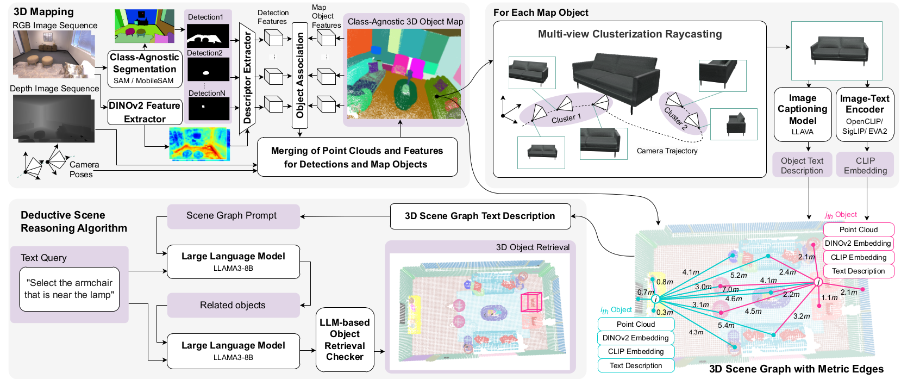

Proposed BBQ approach leverages foundation models for high-performance construction of an object-centric class-agnostic 3D map of a static indoor environment from a sequence of RGB-D frames with known camera poses and calibration. To perform scene understanding, we represent surroundings as a set of nodes with spatial relations. Utilizing a designed deductive scene reasoning algorithm, our method closes the gap in human-to-agent communication by enabling free-form natural language interaction with a scene-aware large language model.
An object-centric, class-agnostic 3D map is iteratively constructed from a sequence of RGB-D camera frames and their poses by associating 2D SAM mask proposals with 3D objects with deep DINO visual features and spatial constraints. To visually represent objects after building the map, we select the best view based on the largest projected mask from K cluster centroids that represent areas of object observations. We leverage LLaVA to describe object visual properties. With the node’s text descriptions, spatial locations, and metric edges we utilize LLM in our deductive reasoning algorithm to perform a 3D object retrieval task.
We perform time consumption analysis on a machine with Intel(R) Xeon(R) Gold 6154 CPU @ 3.00GHz and Tesla V100-SXM2-32GB. On Replica scenes with a mean of 30 detections per frame and 100 average number of objects, our pipeline runs with 1-1.5 fps per second for 3D object-centric map construction. In contrast, our closest analog ConceptGraphs requires 4-5 seconds to perform the same task per step. We achieve such fast results due our design and fast components: MobileSAMv2 (~0.2s per frame), DINO embeddings (~0.12s per frame), GPU realization of DBSCAN noise removal (~0.005s per object), IOU-based spatial similarities, GPU-based clusterization to drastically reduce best view search space for 3D to 2D raycasting projection.